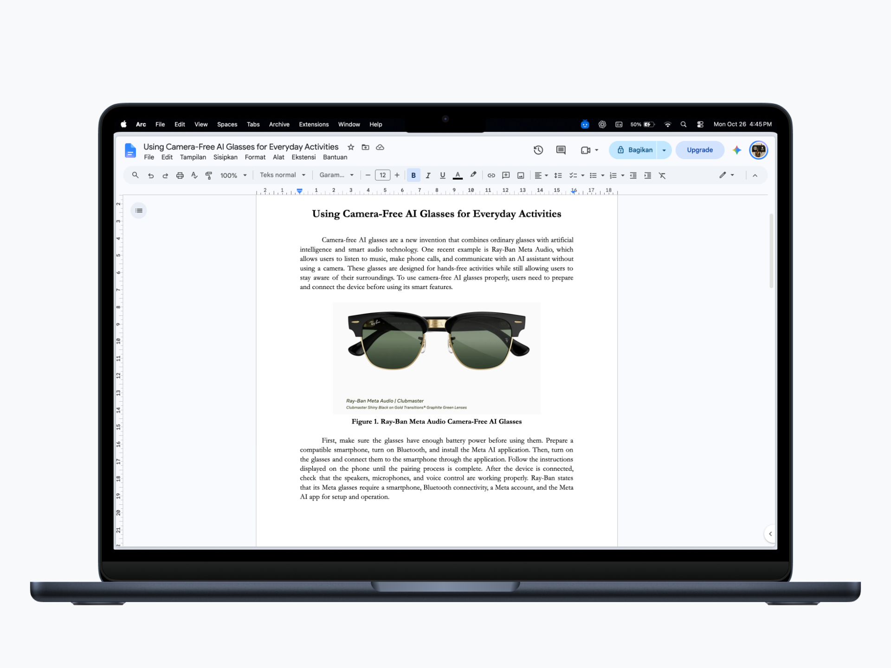

meet bito.
reminder
minum air dulu?aku ingetin, kok.
a little care, every day.
bito chat
browutada cerita nihspill
heii, ketemu juga :)
coba klik aku

Seret Bito. Klik untuk ngobrol.
Ilustrasi interaktif · berjalan di halaman ini